Characetr movement
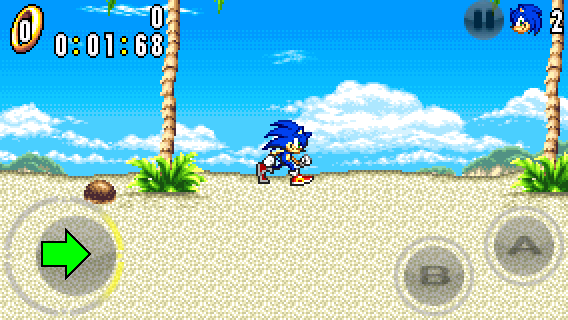
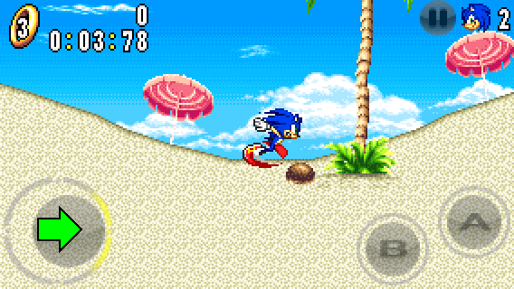
The characters in the game can move left and right. The more you hold a direction, the faster they move.



The characters in the game can move left and right. The more you hold a direction, the faster they move.
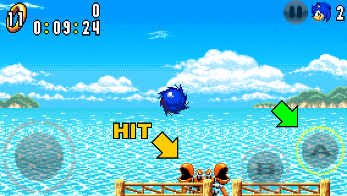
They can also jump by pressing the A button. Jumping also serves as an attack (except for Amy).
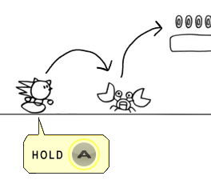
If you spin jump by holding down the A button and land on a badnik or an item box, you will bounce slightly higher than your jump height.
For Amy, you have to use the Hammer Whirl ability (check Amy's Tips & Hints for more information).
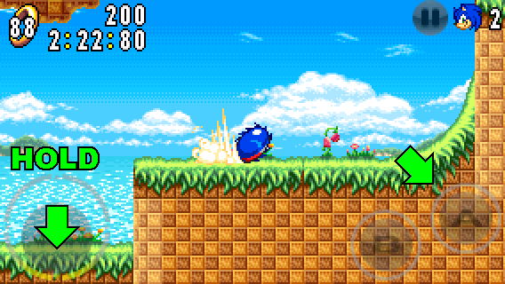
The Spin Dash allows you to build up speed and propel you forward in an instant (except for Amy).
Hold down DOWN on the circle pad and press the A button to perform the Spin Dash. Then, release DOWN to propel you forward.
When holding DOWN, the more you press the A button rapidly, the more speed you build.
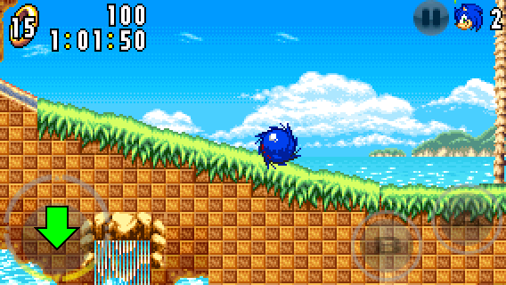
While running, press DOWN on the circle pad to roll into a ball (except for Amy).
Rolling into a ball allows you to go faster during a downhill and also attack in front of you.
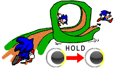
If you move fast enough, you can traverse obstacles like uphill slopes and loops.
Hold down the desired direction on the circle pad to keep moving. If you release the circle pad too soon, you will fall off or descend from the obstacle and you have to find a way to build up speed.

Yellow springs make you jump higher than a typical jump, whereas red springs make you jump high or push yourself to the direction they are facing.
If you play as Amy, you can hit a vertical or diagonal spring with her Piko Piko Hammer to jump yourself even higher than a regular spring jump.

Dash panels are used to propel you forward in an instant.
When a dash panel is placed before a vertical uphill slope, use it to launch yourself from the top of the slope.
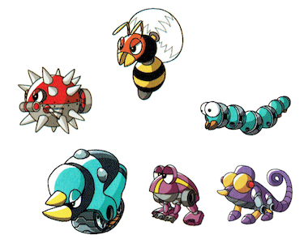
Badniks are robots created by Dr. Eggman for his evil plan. He created them by turning animals into robots.
You can defeat a Badnik by attacking. Doing so will reveal an animal.
Each badnik has its own behaviors. Learn their patterns to defeat them efficently.
Watch out for those who can defend themselves, as they can make you receive damage.
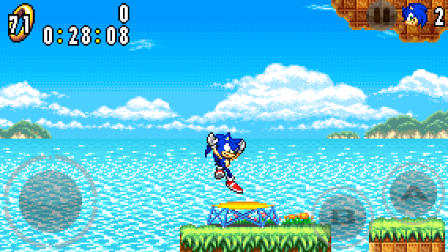
Trampolines are used to make you jump higher. The more you jump on a trampoline, the higher you jump.
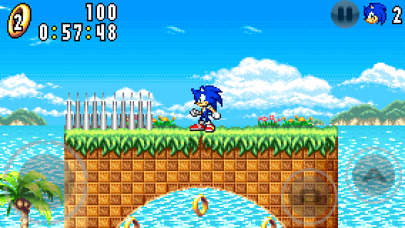
Spikes are an obstacle you have to avoid. If you touch the top of the spikes, you will receive damage.
Some spikes may move in and out of the floor. So be careful.
The rings are scattered around in the stages. They are an essentail item to collect and serve multiple purposes.
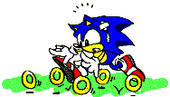
SURVIVE DAMAGE:
The main use of the rings is to protect the player from damage. When you get hit, you lose all your rings and they scatter around.
You can collect the scattered rings back before they disappear.
Be careful not to get hit when you have 0 rings, or else you will lose a life.
If you collect 100 rings, you will earn an extra life.
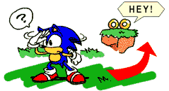
PATH TO FOLLOW:
The rings in areas can also be used as a guide. This is useful when you don't know where to go next.
ITEM BOXES:
You can also find rings inside item boxes.
The number of rings you can earn is based on the indicated number on the item box (5, 10 or ?).
Sonic Advance Mobirev introduces a brand-new options menu structure with options now categorized into different option pages. This section explains the different pages and their available options.
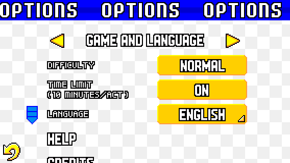
This page contains the Difficulty, Time Limit and Language options. This page is exclusive to the Main Options menu (accessible from the main menu).
DIFFICULTY:
When playing the game in NORMAL difficulty, the usual number of hits required to defeat the bosses is 8.
When playing the game in EASY difficulty, the usual number of hits required to defeat the bosses is 6 and some badniks are absent in the game.
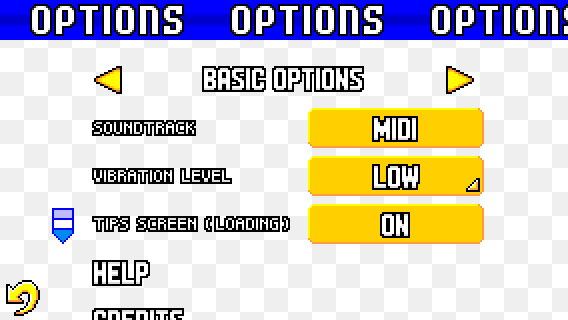
This page contains the Soundtrack (MIDI and GBA MIX), Vibration Level and Tips Screen (Loading) options.
VIBRATION LEVEL:
The vibration has 4 levels: OFF, LOW, MEDIUM and HIGH.
The higher the vibration level is, the longer your device vibrates.
TIPS SCREEN (LOADING):
You can disable the Tips Screen (Loading) option to automatically reduce the loading time and start stages quicker.
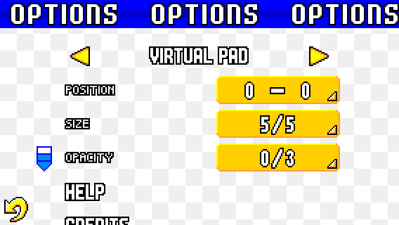
This page is dedicated to the virtual pad. You can change the position, size and opacity of the virtual pad.
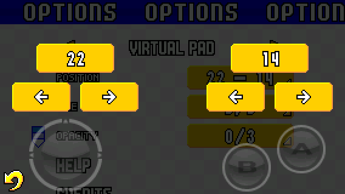
The POSITION option lets you change the horizontal position of both the circle pad (on the left) and the A/B buttons (on the right). The maximum position value depends on the aspect-ratio of your device and the size of the virtual pad.
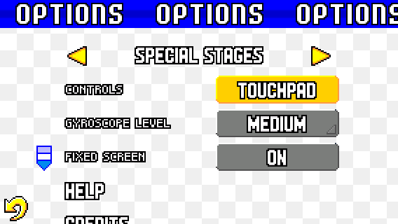
This page is dedicated to the Special Stages. You can change the Special Stage Controls, Gyroscope Level and Fixed Screen options. If you set the Controls to GYROSCOPE, you can access the Gyroscope Level.
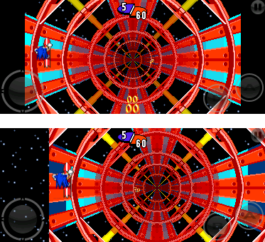
NEW! FIXED SCREEN:
The Fixed Screen option lets you change the Special Stage's horizontal scrolling (for higher aspect-ratio devices only).
When this option is enabled, the scrolling stays at the center of the screen. Otherwise, the scrolling can move horizontally depending on the character's position.
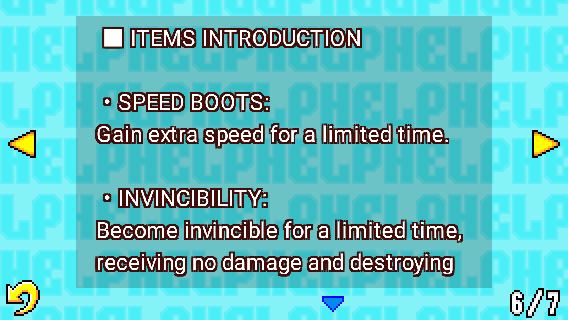
If you are looking for more help, you can check the Help Menu from the Options Menu.
This menu contains information about the story, game modes, characters, items and more.
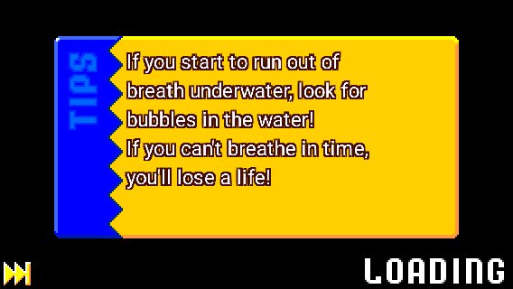
If you turned ON the Tips Screen option, you will be granted with a loading screen with tips displayed before starting an act.
These tips can be useful to learn more about the game.
You can press the SKIP button to reduce the loading time and start a stage quicker.